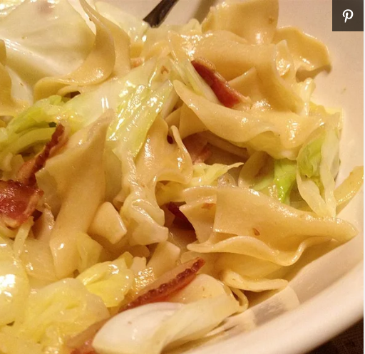

Cabbage and Noodles

Description
Cabbage and noodles, cooked with bacon, is comfort food supreme, great for a chilly day.
Ingredients
- 1 (8 ounce) package egg noodles
- 3 tablespoons butter
- 1/2 pound bacon
- 1 onion, chopped
- 1 small head cabbage, chopped
- 1 dash garlic salt
Steps
- Fill a large pot with lightly salted water and bring to a rolling boil over high heat. Stir in the egg noodles; return to a boil. Cook, uncovered, stirring occasionally, until the noodles are cooked through, but still firm to the bite, about 5 minutes. Drain; return to the pot and stir in the butter.
- Meanwhile, place the bacon in a large, deep skillet, and cook over medium-high heat, turning occasionally, until evenly browned, about 10 minutes. Drain the bacon slices on a paper towel-lined plate.
- Place the onion into the skillet with the bacon grease, and cook and stir over medium heat until the onion begins to soften, about 2 minutes. Stir in the cabbage, and cook and stir until wilted, about 5 minutes. Chop the bacon, add it to the skillet, and cook until the cabbage is tender, about 10 minutes. Stir in the noodles, and continue cooking just until heated through.